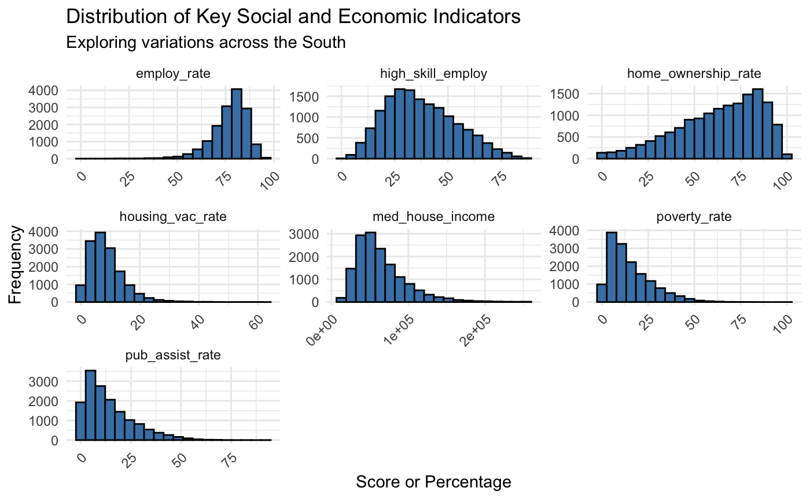
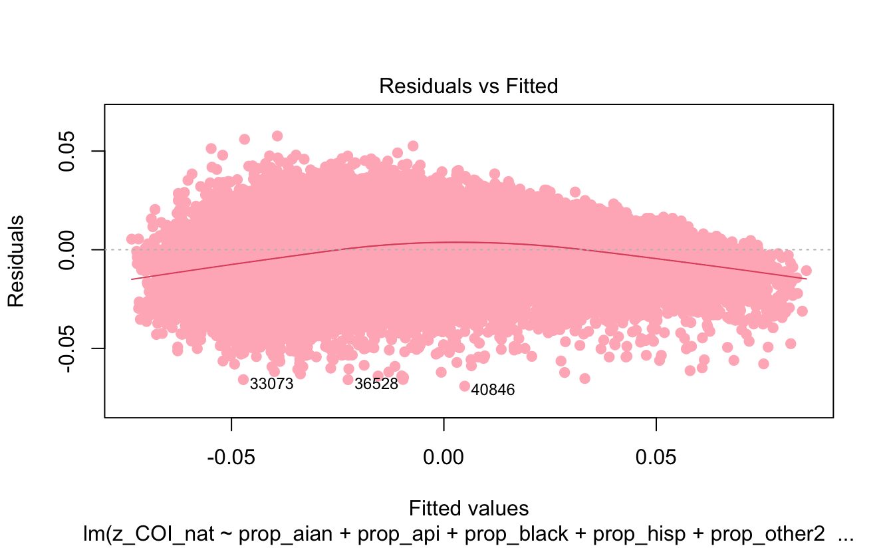
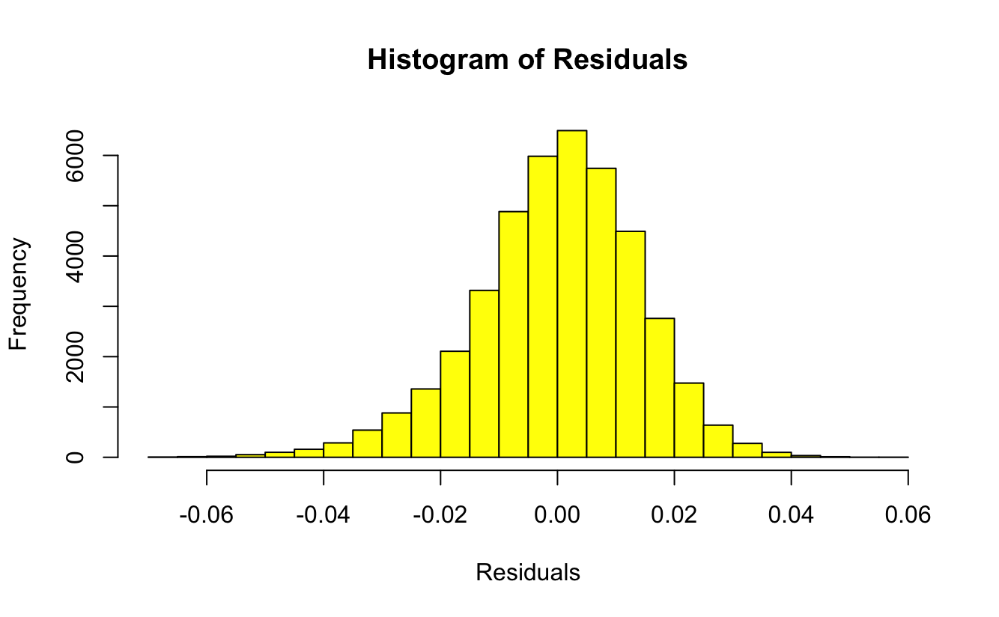

Analysis

We are interested in seeing how the distribution of z-scores varies across the United States. So we decided to split the cleaned data into regions rather than state by using the case_when() function. Organizing the data by region faciliates easier comparisons and provides a clearer understanding of the z_COI_nat` trends. We chose to create a bar graph of the weighted averages of the z_COI_nat data by region.
Distribution of Average COI Z-Score by Region

Since the Northeast region has the highest mean z-score and South has the lowest, we are focusing our analysis on these 2 regions. By graphing histograms and various linear models, we are interested in seeing how social and economic, health and environment, and education factors impact COI scores.
The graphics below display a set of histograms for key indicators of social and economic domain in the Northeast and South region. These indicators include employment rate, high skill employment, home ownership, housing vacancy rate, median house income, poverty rate, and public assistant rate.
Key Indicators of SE Factors in Northeast Region

Based on the distributions, high skill employment is the most normal. This indicates a moderate level of high skilled employment across the region. As a result, high skilled employment does not seem to have any major impact on the z-score since regions with disproportionately low levels of high skilled employment may experience higher levels of socioeconomic challenges. A skewed distribution such as employment rate stands out as a variable that heavily impacts the z-score. Employment rate is skewed to the left. The distribution suggests that a significant proportion of the population is employed and the Northeast region has a robust economy. This aligns with our Distribution by Average z-score by Region table which shows Northeast with the highest scores.
However, the concentration of employment could also suggest challenges for unemployed individuals, potentially leading to issues such as income inequality. This is evident in the right skewed distribution of the median housing income graph. It shows that most of the population earns a lower income. Despite the fact that poverty rate, housing vacancy rate, and public assistant rate are skewed right, this actually shows that most areas in the Northeast have low instances of these cases. This supports the idea that the Northeast is a socially and economically strong. To get a deeper understanding of which of these variables have the greatest impact on z-scores, we will be comparing the t-stats.
T STATS
Key Indicators of SE Factors in South Region

The South region follows an identical pattern to that of the Northeast.
Key Indicators of ED Factors in Northeast Region

Key Indicators of ED Factors in South Region

Residuals vs Fitted for Weighted Average of Education Domain z-scores, Nationally Normed

Finally, the distribution key indicators of the health and environment domain in the Northeast and South region are visualized. These indicators include airborne microparticles, food access, green space access, health insurance, extreme heat exposure, and industrial pollutants in air, water, or soil.
Key Indicators of HE Factors in Northeast Region

Key Indicators of HE Factors in South Region
Histogram of Residulas Model for Weighted Average of Health and Environment Domain z-scores, Nationally Normed
